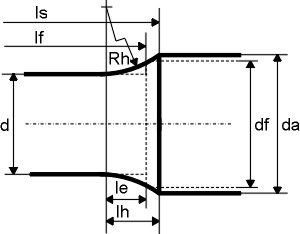

|
|
|


扭杆弹簧
扭杆弹簧的计算在 DIN 2091 (1981) [105] 中有定义。
工况数据
当您指定载荷时，您可以输入转角或扭矩的值。
如果为扭杆设置了默认值（选中 ），扭杆上的许用剪切应力 τzul 会增大。
几何
输入特定参数来定义弹簧的几何形状。
对于 头部形式，您还必须指定齿数，尽管这仅用于文档记录，并不用于计算。标准假设剪切模量 G 为常数。然而，即使该值略有不同，仍然允许进行计算。

图 50.1：定义扭杆
Torsion-Bar Springs
The calculation for torsion bar springs is defined in DIN 2091 (1981) [105].
Operating data
When you specify the load, you can enter a value for either an angle of rotation or a torsional moment.
If a default is set for the torsion bar ( is selected), the permitted shear stress on the torsion bar, τzul, increases.
Geometry
Enter specific parameters to define the geometry of the spring.
For the head form, you must also specify the number of teeth, although this is purely for documentation and is not used in the calculation. The standard assumes shearing modulus G as a constant. However, the calculation is still permitted even if this value is slightly different.
Figure 50.1: Defining a torsion-bar